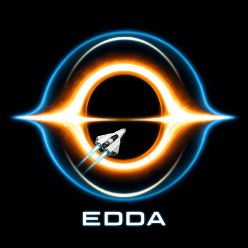
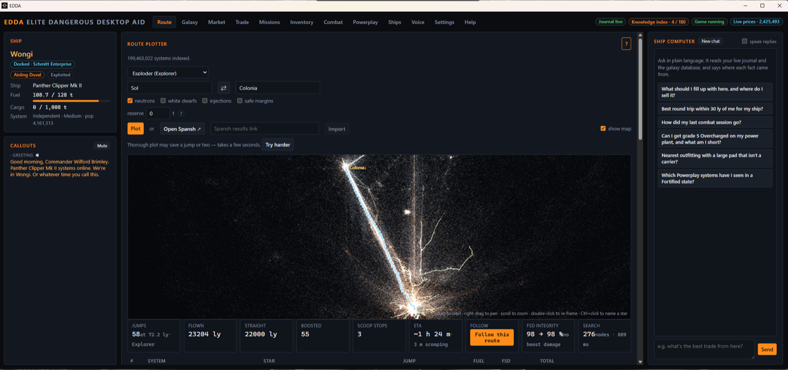
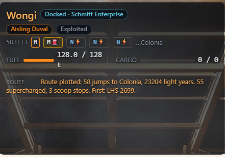
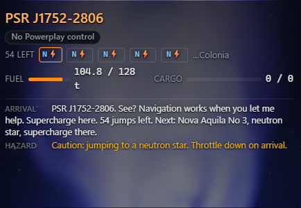
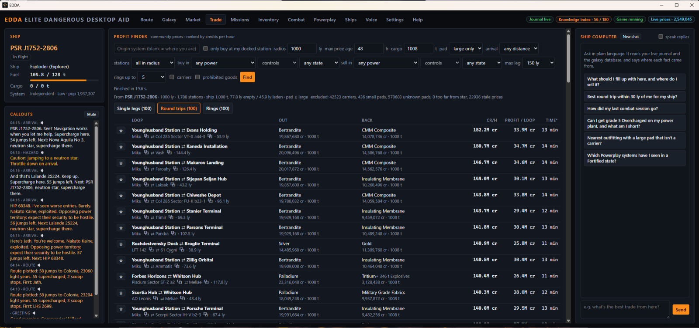

EDDAFor Elite Dangerous commanders
The galaxy is trying to kill you. EDDA is trying to help.
Elite Dangerous simulates 400 billion star systems, and approximately none of them care about you. EDDA plans galaxy-spanning routes in seconds, finds trade routes that will make treasure goblins envy you, and will do its best to protect you against yourself.
Voice integration comes standard, optional AI integration makes it an alt-tab-free experience, and your journal never leaves your machine — the galaxy answers come from EDDA's community server, which sees a question, never you.
100% free. Free forever.
*EDDA is still in development and there may be bugs. Report them.

Routing
The long way, computed before you finish the thought.
199,000,000 charted systems live on your disk. Ask for Colonia — 22,000 ly, past deserts that eat ships — and the route is there in seconds (technically the route is probably calculated before your measly eyes register the beautiful button click effect; displaying it takes more time). It is fuel-exact. It knows your ship. It marks the stops you need and none you don't.
Follow mode targets each hop in-game, calls each supercharge, and replots when you wander. We flew it with a stopwatch. The math held.

Voice
It speaks when it matters. Otherwise, silence.
A neutron star boosts your range — 6× — if you ride its cone, and a short, poignant lesson in astrophysics if you arrive at full throttle. EDDA says "throttle down" eighteen seconds early, out loud. It knows which stars won't feed your scoop, and it does the fuel arithmetic before the jump — the only time that arithmetic has ever been useful to anyone.
On plan, it trusts the plan. Fuel it accounted for is fuel it won't mention. Silence is a feature.

Trade
Markets, minus the lies.
Community market data is a miracle with a few crime scenes in it. EDDA fences out carrier price manipulation, drops the stations that would confiscate your cargo, and treats depth honestly: a route is only as good as the tonnage waiting at both ends.
Get market updates that are smaller than the YouTube video you watched on how to outfit a hauler.

Receipts
Built with love. And benchmarks.
Every feature was meticulously, maniacally optimized — from a route planner that nearly breaks mathematical laws to a custom file format 90% smaller than the raw community data dumps. If you find anything wrong, report it in the app.